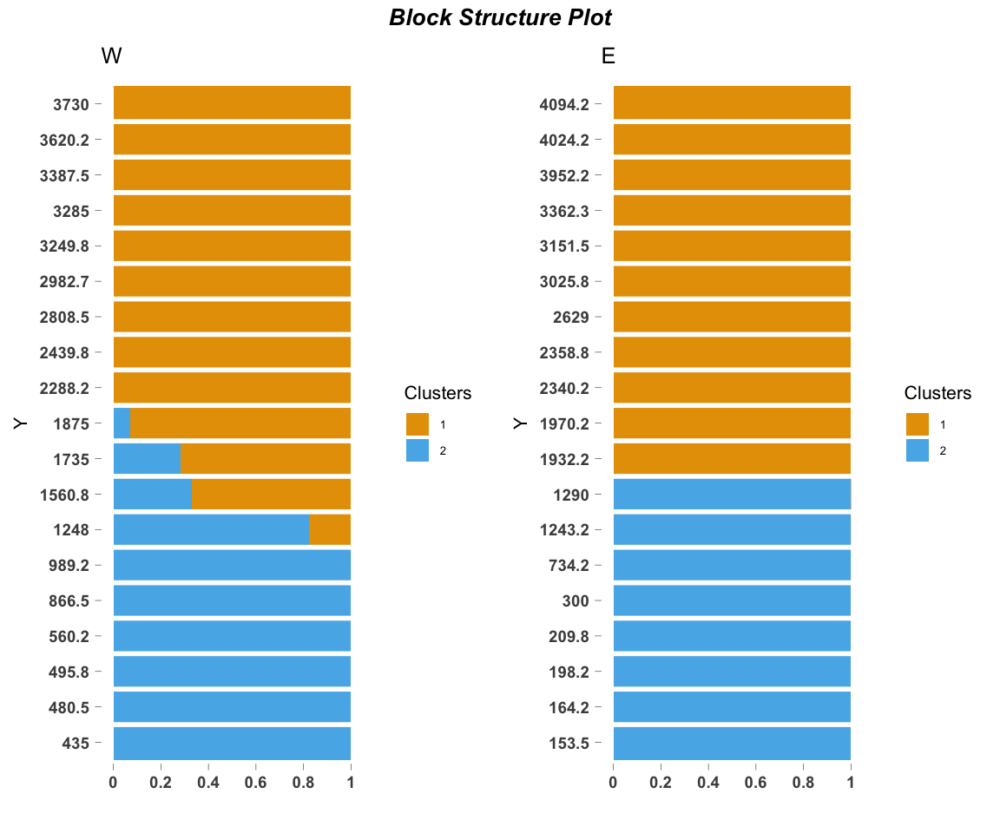
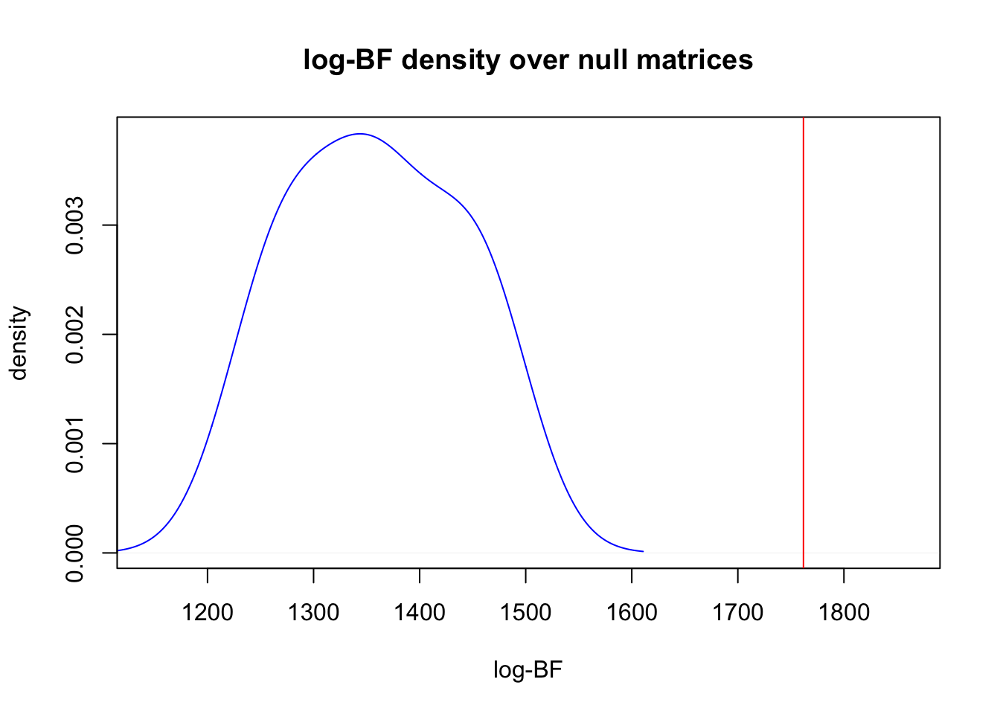
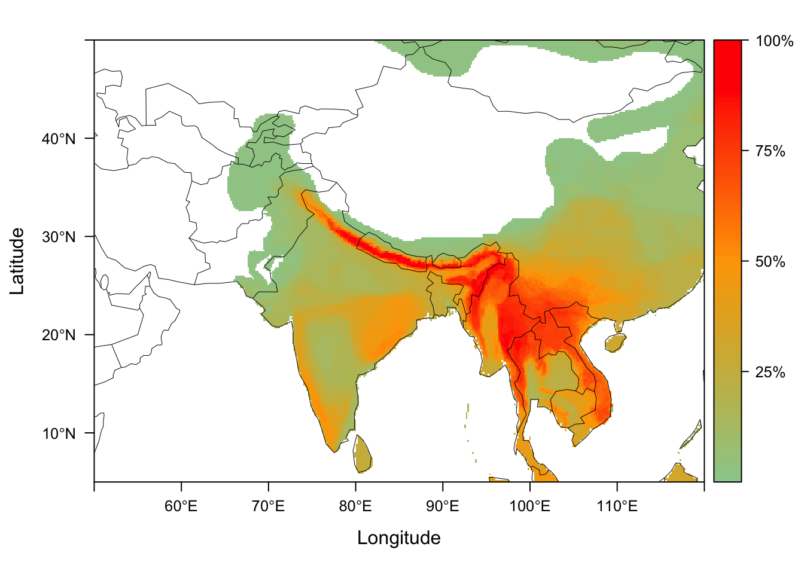
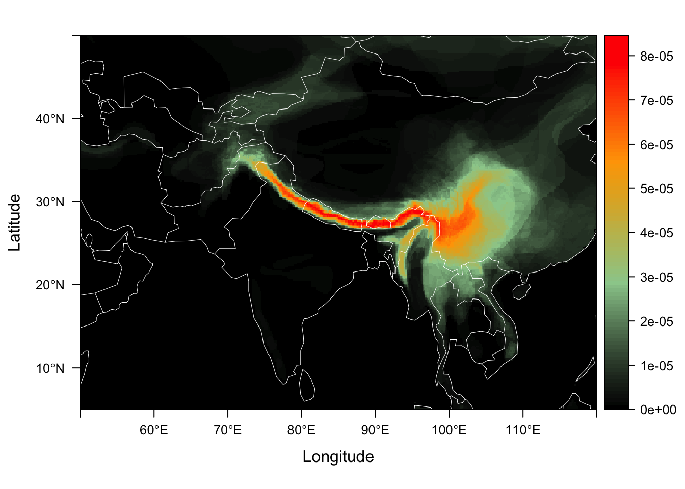

.
Introduction
ecostructure is an R package for clustering and visualizing structure in ecological assemblages using Mixed Membership or Grade of Membership (GoM) models (see reference). The package can incorporate data on different spatial scales - assemblages can reflect species abundances in local communities (e.g., data in community ecology and microbiomics) or presence and absence of species across continent(s) (e.g., macroecology and biogeography). ecostructure also allows phylogenetic, geographic, and trait data to be incorporated in the clustering framework, producing clusters along different axes of bio-diversity, which we call motifs.
This tutorial focuses on the analysis of bird assemblages at global and local scales, showcasing the use of these tools and methods to assess the turnover of species across samples and illustrate that turnover with visualizations.
The main contributions of the ecostructure package are as follows
Functions to cluster species abundance and species presence/absence data by fitting GoM models.
New methods for visualizing the structure of species assemblages (e.g., communities or biotas), leveraging the output from the appropriate GoM model.
Tools to process species level data using a phylogeny, a trait dataset, or a GIS dataset in order to examine the contribution of history, function, and geography to species level structure.
The analytical framework provided by ecostructure is employed in our accompanying paper (see citation below). The paper focuses on a survey of bird species abundances at 38 local sites across the all elevations in the eastern and western Himalaya, the data from which is provided as part of this package.
Citation
If you find our package useful or want to known more about the underlying methods, please check out our paper:
White, Alexander E. and Dey, Kushal K. and Mohan, Dhananjai and Stephens, Matthew and Price, Trevor D. Regional influences on community structure across the tropical-temperate divide. Nature Communications. 2019. 10 (1). 2646. 10.1038/s41467-019-10253-6
Installation
System requirements
ecostructure requires core geospatial libraries supporting the use of GIS data in R - GDAL (\(>= 2.0.1\)), GEOS (\(>= 3.4.0\)), and PROJ.4 (\(>= 4.8.0\)). Typically these libraries get automatically installed as part of the dependency packages to ecostructure.
ecostructure requires access to the “gfortran” library. Mac OS X users may encounter the error “library not found for -lgfortran” when installing. To fix this error, please follow the instructions at this link.
R requirements
ecostructure requires R version \(>= 3.4.0\)
To install ecostructure, first, install the dependencies.
source("https://bioconductor.org/biocLite.R")
biocLite("Biobase")
install.packages("devtools")
devtools::install_github("kkdey/methClust");
devtools::install_github("kkdey/CountClust")
devtools::install_github("TaddyLab/maptpx")Next, load the dependencies
library(Biobase)
library(methClust)
library(CountClust)
library(maptpx)Next, install ecostructure.
devtools::install_github("kkdey/ecostructure")Finally, load the ecostructure package.
library(ecostructure)A comprehensive list of all the functions in the ecostructure package can be found by running the following command.
help(package = "ecostructure")Himalayan Bird Surveys
We present the abundances of birds in 38 five ha forest patches across elevations in both the eastern and western Himalayas, together with the site metadata. There are 304 species in the dataset, and species morphological trait data (species means) are also presented along with a time-calibrated phylogeny of those species. For methods related to measuring traits and building the phylogeny, see this paper for details).
The data is saved as an ExpressionSet object and can be read as follows
data("himalayan_birds")One can extract the species abundance matrix as follows
species_counts <- t(exprs(himalayan_birds))
t(species_counts)[1:10,1:5]## A2 A3 A4 A6 A7
## Macropygia_unchall 0 0 0 0 0
## Streptopelia_chinensis 0 0 0 0 0
## Streptopelia_senegalensis 0 0 0 0 0
## Columba_pulchricollis 0 0 0 0 2
## Streptopelia_orientalis 0 0 0 0 0
## Chalcophaps_indica 0 0 0 0 0
## Treron_curvirostra 2 0 0 0 0
## Treron_apicauda 0 2 2 0 0
## Treron_sphenurus 0 0 0 0 0
## Treron_phoenicopterus 0 0 0 0 0The site metadata for the Himalayan sites - describing elevation, east/west, latitude, and longitude - can be extracted as follows.
site_metadata <- pData(phenoData(himalayan_birds))
head(site_metadata)## Elevation North East WorE
## A2 198.25 26.97898 92.92198 E
## A3 734.25 27.00627 92.40457 E
## A4 1243.25 27.02750 92.41041 E
## A6 2629.00 27.14773 92.45938 E
## A7 2340.25 27.09198 92.40857 E
## A8 300.00 26.96138 93.01216 EFinally, the species metadata, comprising the means of the bill traits, wing size, tarsus and mass of each species, can be read as follows
species_metadata <- pData(featureData(himalayan_birds))
head(species_metadata, 4)## bill_length bill_width bill_depth wing tarsus
## Macropygia_unchall 11.080 4.260 4.970 197.550 26.305
## Streptopelia_chinensis 10.765 3.505 3.870 140.000 22.620
## Streptopelia_senegalensis 9.230 2.880 3.270 130.225 20.350
## Columba_pulchricollis 12.983 5.595 5.678 203.075 25.373
## mass
## Macropygia_unchall 168.0
## Streptopelia_chinensis 159.0
## Streptopelia_senegalensis 83.9
## Columba_pulchricollis 330.0Besides the survey data, ecostructure also provides the presence absence matrix for all breeding birds in southeast Asia, encompassing the region of the survey sites in the above data. This data has been prepared from publicly available shapefiles (.shp) from BirdLife International.
data("indian_birds_pa")Model fitting and Visualizations
The ecos_fit function fits Grade of Membership models either on binary presence-absence data or species abundance counts data. We illustrate each case below.
Species abundance data
We use ecos_fit to evaluate structure in our Himalayan birds dataset. These data are counts of species in sites, and so the function fits a Multinomial model to generate species abundance motifs. The data structure (abundance or presence/absence) is evaluated by the function automatically.
set.seed(1000)
fit <- ecos_fit(species_counts, K = 2, tol = 0.1, num_trials = 10)##
## Estimating on a 38 samples collection.
## Fit and Bayes Factor Estimation for K = 2
## log posterior increase: 18315.4, 83.3, 88.4, 0.6, done.
## log BF( 2 ) = 2175.01
##
## Estimating on a 38 samples collection.
## Fit and Bayes Factor Estimation for K = 2
## log posterior increase: 2937.3, 10.8, 0.5, done.
## log BF( 2 ) = 1772.92
##
## Estimating on a 38 samples collection.
## Fit and Bayes Factor Estimation for K = 2
## log posterior increase: 20698.2, 63.5, 12.4, 13.4, 6.6, 0.6, done.
## log BF( 2 ) = 1791.65
##
## Estimating on a 38 samples collection.
## Fit and Bayes Factor Estimation for K = 2
## log posterior increase: 15913.2, 73.6, 0.7, done.
## log BF( 2 ) = 1922.38
##
## Estimating on a 38 samples collection.
## Fit and Bayes Factor Estimation for K = 2
## log posterior increase: 2131.8, 61.4, 2, done.
## log BF( 2 ) = 1951.69
##
## Estimating on a 38 samples collection.
## Fit and Bayes Factor Estimation for K = 2
## log posterior increase: 3565.7, 4, done.
## log BF( 2 ) = 1874.04
##
## Estimating on a 38 samples collection.
## Fit and Bayes Factor Estimation for K = 2
## log posterior increase: 14118, 120, 45.1, 0.5, 0.3, 0.1, done.
## log BF( 2 ) = 1953.93
##
## Estimating on a 38 samples collection.
## Fit and Bayes Factor Estimation for K = 2
## log posterior increase: 2411.6, 47.5, 2.1, done.
## log BF( 2 ) = 1950.96
##
## Estimating on a 38 samples collection.
## Fit and Bayes Factor Estimation for K = 2
## log posterior increase: 20280.2, 88.5, 14.4, 4.2, 14.1, done.
## log BF( 2 ) = 2186.57
##
## Estimating on a 38 samples collection.
## Fit and Bayes Factor Estimation for K = 2
## log posterior increase: 23791.2, 31, 10.2, 25.1, 0.7, done.
## log BF( 2 ) = 1936.48The function outputs a lower rank representation of the data in species_counts, according to the value of K chosen by the user. Above, we chose to examine the primary partition of the data into 2 motifs by setting K = 2. Increasing num_trials will run more burn-in trials for the model fit, and decreasing tol will make the underlying algorithm run longer before convergence. These may need to be modified if the input data matrix is small.
The main components of the output from ecos_fit are:
omega: A site \(\times\) K matrix, K representing the number of clusters or species abundance motifs. The row sums equal 1 and the entries are positive. These represent the contribution of the different motifs to the composition (i.e., species abundance distribution) of each site.theta: A species \(\times\) K matrix, where the column sums equal 1. These values represent the contributions of each species to each motif k.
Vizualing motif contributions to sites
We can take the output from the model fit and visualize the motif contributions matrix omega using a stacked bar chart.
east_west_dir <- factor(site_metadata$WorE, levels = c("W", "E"))
elevation_metadata <- site_metadata$Elevation
ecos_blocks(fit$omega,
blocker_metadata = east_west_dir,
order_metadata = elevation_metadata)
Because we are interested in species turnover across elevational and geographic locations, we block the two elevational gradients (western or eastern) and plot them side by side.
This blocking structure (blocker_metadata) can be used for any environmental gradient of interest, allowing replicates or experimental treatments (in our case, geographic location) to be easily visualized together. order_metadata determines the order of the stacked bars in each block. Other parameters can be customized to modify the axes, titles, etc.
See ecos_plot_pie below to plot the data in a spatially explicit context (i.e., on a map).
Identifying species contributions to motifs
A central component of this framework is assessing the species contributions to each motif. One may be tempted to merely examine the theta matrix component of the model fit, and identify the the species that differentially drive the clustering.
We use the function ExtractTopFeatures from the R package CountClust to compute and record the top contributing species to each species abundance motif.
features <- CountClust::ExtractTopFeatures(fit$theta, top_features = 5,
method = "poisson", options = "max")
t(apply(features$indices, c(1,2), function(x) return(rownames(fit$theta)[x])))## [,1] [,2]
## [1,] "Phylloscopus_chloronotus" "Phylloscopus_xanthoschistos"
## [2,] "Phylloscopus_reguloides" "Cyornis_rubeculoides"
## [3,] "Seicercus_whistleri" "Macronous_gularis"
## [4,] "Phylloscopus_occipitalis" "Orthotomus_sutorius"
## [5,] "Aethopyga_nipalensis" "Copsychus_malabaricus"Comparing observed fit to null expectation
One may also want to compare the clustering of the original data to that of randomly generated null matrices of species abundances. We provide a way to compare the observed model fit to null model fits of various types. Randomized matrices of are generated internally using the randomizeMatrix function in the package picante.
out <- ecos_nullmodel(species_counts, K=2, null.model = "richness",
iter_randomized= 10, option = "BF")##
## Estimating on a 38 samples collection.
## Fit and Bayes Factor Estimation for K = 2
## log posterior increase: 20927.8, 10.5, 19.1, 4.6, 17.5, 5.2, 0.3, 0.9, 3.2, 0.5, 0.5, 0.2, done.
## log BF( 2 ) = 1353.48
##
## Estimating on a 38 samples collection.
## Fit and Bayes Factor Estimation for K = 2
## log posterior increase: 1845.7, 6.7, 3.1, 16.9, 7.2, 3.5, 3.4, 0.6, done.
## log BF( 2 ) = 1440.07
##
## Estimating on a 38 samples collection.
## Fit and Bayes Factor Estimation for K = 2
## log posterior increase: 18432.1, 11.1, 21.8, 1.1, 9.4, 0.4, 0.5, 2.1, 2, 0.2, 1, 0.2, done.
## log BF( 2 ) = 1455.82
##
## Estimating on a 38 samples collection.
## Fit and Bayes Factor Estimation for K = 2
## log posterior increase: 1707.1, 46.3, 8.3, 5.7, 0.4, 0.3, 1.5, 2.8, 1, 0.1, done.
## log BF( 2 ) = 1324.43
##
## Estimating on a 38 samples collection.
## Fit and Bayes Factor Estimation for K = 2
## log posterior increase: 1820, 14.1, 4.9, 3.6, 1.9, 3.3, 0.4, 1.4, 0.7, 0.9, 2.7, 0.4, done.
## log BF( 2 ) = 1473.37
##
## Estimating on a 38 samples collection.
## Fit and Bayes Factor Estimation for K = 2
## log posterior increase: 19254.9, 24.9, 9, 3.5, 0.8, 9.2, 2, 3.4, 0.4, 0.8, done.
## log BF( 2 ) = 1270.9
##
## Estimating on a 38 samples collection.
## Fit and Bayes Factor Estimation for K = 2
## log posterior increase: 1844.4, 28.1, 9.4, 6.8, 1.1, 1.6, done.
## log BF( 2 ) = 1243.54
##
## Estimating on a 38 samples collection.
## Fit and Bayes Factor Estimation for K = 2
## log posterior increase: 1842.1, 18, 6.3, 11.9, 7.4, 1.3, 1.4, 8.2, 1.3, 0.5, done.
## log BF( 2 ) = 1360.54
##
## Estimating on a 38 samples collection.
## Fit and Bayes Factor Estimation for K = 2
## log posterior increase: 20732.8, 41, 18.9, 5.5, 7.1, 0.5, 0.2, done.
## log BF( 2 ) = 1386.47
##
## Estimating on a 38 samples collection.
## Fit and Bayes Factor Estimation for K = 2
## log posterior increase: 19997.9, 14.6, 47.5, 4.4, 0.7, 0.6, 0.6, 16.3, 1.8, 1.1, 0, done.
## log BF( 2 ) = 1279.4
##
## Estimating on a 38 samples collection.
## Fit and Bayes Factor Estimation for K = 2
## log posterior increase: 14985.7, 110.4, 43.3, 2.5, 0.1, done.
## log BF( 2 ) = 1761.84
Presence-absence data
Here we describe how to cluster species using a presence-absence data matrix of species across the globe or sub-regions of the globe.
The matrix may represent be local data or macroecological data (species in a 1\(^\circ\) \(\times\) 1\(^\circ\) map cell) - for functions to generate these data using GIS data sources (shapfiles or geodatabase files) see other sections below.
We again use ecos_fit to fit Grade of Membership models on binary presence-absence data using a Binomial/Bernoulli model. We refer to the clusters/motifs obtained by this procedure as species motifs.
data("indian_birds_pa")
pres_ab_fit <- ecos_fit(indian_birds_pa, K = 2, tol = 0.1)The above code takes around 4 minutes to run on a single machine.
Again, the function outputs a lower (specified by K) rank representation of the data indian_birds_pa. The output pres_ab_fit consists of omega and theta components and these matrices can be understood as:
omega: A site \(\times\) K matrix, K representing the number of clusters or species motifs. The row sums equal 1 and the entries are positive. These represent the contribution of the different motifs to the species composition of each location.theta: A species \(\times\) K matrix, where each species has a probability of being found in the kth motif. These probabilities are not constrained to sum to 1 as in the multinomial case we illustrated earlier.
We have an example model fit of the above function run as part of the ecostructure package.
data("pres_ab_fit")Vizualing species motif contributions
We can take the output from the model fit and again visualize the membership proportions omega. However, as the data may consist of thousands of spatially explicit locations, we do not use ecos_blocks as in the previous example, but instead use the function ecos_plot_pie, which incorporates latitudinal and longitudinal coordinates of the original sites. We plot the omega matrix in a spatial context as follows.
ecos_plot_pie(omega = pres_ab_fit$omega,
lat_lim = c(5,50),
long_lim = c(55,120),
path = "geostructure_plot.png",
color= c("red","blue"))## reading background map shapefile from inst/extdata/ne_110m_coastline
## folderThis function will create a file geostructure_plot.png in the current folder (getwd() in R to figure out).
One can easily apply this to any region of interest. We provide an example of visualizing species presence-absence structure as generated by applying the binomial GoM model with \(K=6\) on the bird species presence absence matrix from Australia. Again these data have been processed from BirdLife International
data("australia_birds")
australia_model <- ecos_fit(australia_birds$pr_ab_data,
K=6, tol = 0.1)The results from this fit, which takes < 2 minutes, are saved as australia_model and can be visualized as follows
data("australia_model")
ecos_plot_pie(omega = australia_model$omega,
coords = australia_birds$latlong,
long_lim = c(110,160),
lat_lim = c(-50,-10),
path = "geostructure_plot_aus.png",
color= c("orange", "red", "yellow",
"deepskyblue", "chartreuse",
"blue"))The plot should look as follows

Geographic contributions to local communities
ecostructure offers tools for users to examine how local patterns of community structure are related to potential geographic sources. One way to interpret the geographic inputs into a given site is to generate a site’s dispersion field by overlapping the geographic distributions of the species present at the site.
Generating dispersion fields for local sites
For a given dataset of local species presences (can be abundances but dispersion fields are generated based on presence), we can generate dispersion fields for each site and again fit a GoM model. These methods require some types of GIS data source, either shapefiles of species distributions, a geodatabase of species distributions (as in the .gdb of global bird species ditrbutions provided by BirdLife International), or even point occurences of species presences in a region.
We generate dispersion fields for our 38 sites using the function dsp_create_from_survey.
## If GIS data are in the form of separate shapefiles (.shp)
local_him_disp <- dsp_create_from_survey(local_data = species_counts,
gis_data_type = "shp",
shp_dir = {PATH TO directory with species shapefiles})
## If GIS data are in the form of a geodatabase (.gdb)
local_him_disp <- dsp_create_from_survey(local_data = species_counts,
gis_data_type = "gdb",
gdb_dir = {PATH To Directory with Species Geodatabase})dsp_create_from_survey takes a local data matrix and a specified GIS data type to produce dispersion fields in a specified regions. The function reads in shapefiles for each species (or a .gdb for all species) and rasterizes those distributions for a given resolution. There are many arguments to customize so be sure to examine the documentation for this function. The output ‘local_him_disp’ consists of 3 objects.
raster: A list of rasters representing the dispersion fields for each site (length is the number of rows (sites) inlocal data) at the specified resolution.precise: A list of rasters representing the dispersion fields for each site (length is the number of rows (sites) inlocal data) at the resolution of the argumentprecise. These could be used for plotting high resolution dispersion fields.matrix: A list of the same rasters israsterbut in matrix form. These are used for easily processing the dispersion fields into the structure required to fit a GoM model.
Visualizing dispersion fields
We can generate maps for all of the disperison fields using the function dsp_plot_map. We provide the dispersion fields for our 38 Himalyan community surveys, dispersion_field_ex, as a list of matrices.
data("dispersion_field_ex")
dsp_plots <- dsp_plot_map(dispersion_field_ex,
raster_latlim = c(5, 50), raster_longlim = c(50, 120),
scale = "percentage")
dsp_plots[[1]]
dsp_plots is now a list of plots, each of which visualizes the dispersion fields from our local sites.
Processing dispersion fields for GoM model fit
We can easily process the dispersion fields into one data matrix by using dsp_to_matrix
dsp_fields_matrix <- dsp_to_matrix(dispersion_field_ex)The output from dsp_to_matrix is a data matrix with rows equivalent to each site’s dispersion field as a vector.
dim(dsp_fields_matrix)## [1] 38 201600Each column is a map cell in the region of interest, with the value being a count from each site of how many species from that site overlap the cell.
GoM model and visualization of dispersion fields
As these data are counts, we can now fit a multinomial GoM (using to examine geographic motifs. In this case, omega is a matrix of motif contributions to dispersion fields, and the theta matrix represents each map cells contrbution to each of the motifs. We can plot the thetas on a map, showing the contribution of each map cell to the motif. Some biologists may think of these motifs as analagous to the regional inputs into local communities.
The model fit is done using ecos_fit as above. Because this geographic data matrix may be particularly large, depending on the resolution chosen to produce the dispersion fields, the fit may take longer than the fit on the original data matrix.
fit <- ecos_fit(dsp_fields_matrix, K = 2, tol = 0.1, num_trials = 10)We can plot the theta distributions of each geographical motif using the function dsp_motif. We provide an example theta matrix with the package called example_theta.
data("example_theta")
himalayan_geo_motifs <- dsp_motif(example_theta,
color_ramp = c("black", "darkseagreen3",
"orange","red"),
dsp_fld_res = 8)
himalayan_geo_motifs$motif_maps[[1]]
We call this color palette the Ghostbusters theme !! :)
Incorporating phylogenic and trait information
The relationships between species, either phylogenetically or functionally, are an important component in evaluating ecological structure. We provide two functions, one for phylogenies and one for trait data, that collapse species into either clades or functional groups based on a desired cut off.
Phylogeny
We load the time-calibrated phylogenetic tree phylo_tree of the 304 Himalayan birds in species_counts. We then collapse the species into clades to based on certain time point cut off on the tree collapse_at. Below we cut the tree off at 10 million years ago.
data("phylo_tree")
phylo_counts <- ecos_prepare_by_phylo(species_counts, phylo_tree, collapse_at = 10)
dim(phylo_counts$outdat)## [1] 38 63Traits
We use morphological trait metadata from himalayan_birds data and then use the distance metric based on these traits to collapse the bird species as above. As in the case of the time component above, one can set prop_div to a collapse the tips of trait dendrogram to produce a specific number of functional groups (the proportion of the original diversity). Below we create \(91\) functional groups out of the original 304 species.
bill_traits <- as.matrix(dist(scale(species_metadata[,c(1:3)])))
counts_bill_traits <- ecos_prepare_by_trait(counts = species_counts,
traits = bill_traits,
prop_div=0.3)
dim(counts_bill_traits)## [1] 38 91Both phylo_counts and counts_bill_traits can now be passed to ecos_fit to generate either phylogenetic motifs or trait motifs.
Generating a presence absence matrix
There are a number of ways to generate species presence absence data to evaluate species motifs. Conservation organizations (IUCN, BirdLife International, etc.) often distribute shapefiles and geodatabase that contain geographic distributions in the form of polygons. Point occurances can also be overlaid on a raster to produce a rough geographic distribution (this may be suitable for fitting GoMs at a large scale).
We provide a function dsp_create_from_gdb that creates a presence absence matrix using these GIS data types. This function is slow on large datasets. We illustrate how it might be used below on the geodatabase of global bird distrbutions provided by BirdLife International.
## Request and fetch geodatabase (gdb) from BirdLife International : http://datazone.birdlife.org/species/requestdis or
## say we call one such gdb - example_birdlife.gdb
gdb_global_birds <- st_read("example_birdlife.gdb")
## Then run the following commands to generate the presence absence matrix
disp_from_scratch <- dsp_create_from_gdb(gdb_object = gdb_global_birds,
raster_resolution = 1,thresh = 3,
raster_latlim = c(-90,90),
raster_longlim = c(-180,180),
species_feature = "SCINAME")The presence absence data is output as disp_from_scratch$pres_ab on which ecos_fit can be run.
fit <- ecos_fit(disp_from_scratch$pres_ab, K = 5,
tol = 0.1, num_trials = 10)dsp_create_from_gdb also returns the dispersion fields similar to dispersion fields create.
One may request the BirdLife dataset from here. Presence/absence data illustrated above was generated using this data source.
Users may also look to other packages that specifically focus on generating presence absence data from GIS data types. letsR is an incredibly useful package to this end. Presence-absence matrices from letsR can certainly be used in tandem with the ecostructure functions. Our goal is to contribute to that body of work by creating a tool that employs the speed and utility of the packages sf and fasterize (see velox as well).
Developers
ecostructure has been developed by Kushal K Dey and Alexander E White, in the labs of Matthew Stephens and Trevor Price labs at the University of Chicago.
The local Himalayan bird surveys were conducted by Trevor Price and Dhananjai Mohan.
For any queries or concerns related to the software, you can open an issue here.
Or you can contact us directly: Kushal K Dey - kshldey@gmail.com or Alex White - aewhite100@gmail.com.